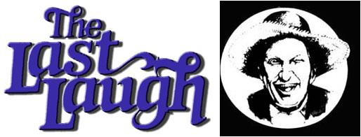

"If you pickup a starving dog and make him prosperous, he will not bite you. This is the principal difference between a dog and a man.
Mark Twain
Well sir, they jist ain't nothin' like a spring evenin' to put folks in a philosophizin' mood. What with the frogs an' bugs singin' fit fer a concert hall, an' ev'rything so lush and new that the air gits to smellin' green, I s'pose it's only natural fer the mind to dwell on weighty thoughts.
Which, I reckon, is why the conversation over at the Gen'ral Store t'other night turned to the subject of dogs ... although I must admit that Clarence Smithers' blue tick, Belle, did have somethin' to do with bringin' up the topic.
Y'see, that hound strolled over to the assembled loafers with the clear intention of occupyin' her usual spot ... right under Clarence's chair, but jist awaitin' fer one of the old boys to vacate a cozier position. On this occasion, howev'r, she was greeted by a barrage of corncobs, popsicle sticks, an' cussin' that didn't let up till she was well downwind and distant.
"Belle got herself tangled with a skunk, eh Clarence?" commented Doc Thromberg, whose nose was still twitchin' . . . makin' his mustache look fer all the world like a woolly bear with the St. Vitus dance.
"Tangled, my foot," replied Smithers. "The ol' girl killed that polecat an' drug it home to boot! Brought the critter right through the hole in my screen door an' liked to ruin my bedsheets with it, too. I used up three quarts of last year's beefsteak tomatoes washin' her, but that bath didn't do more'n take the edge off'n her aroma. An' to make a bad situation worse, I was flat outa change when I got to the coin laundry to clean my beddin' . . . had to stuff them ripe sheets into a machine that was already runnin'. I figure I can sneak in to pick'em up later an' nobody'll be the wiser."
Clarence's narrytive musta put an exceptional tickle on Ott Bartlett's funny bone, 'cause that ol' gentleman jist about lost his choppers fer laughin' an' was some minutes recoverin' afore he could git a word out.
"I reckon that ol' Belle ain't the dumbest mutt I ever seen ... though I'll allow that she jist might earn that distinction yet,-Ott began. "But fer pure, gold-plated, all - fired imbecility, I'd be hard put to name a hound that could stand up to that beagle the Jarvis twins usta own."
Now, bein' as neither the one Jarvis boy nor t'other (them fellers is named Jervis and Jorvis, but nobody kin tell 'em apart so the names don't matter much) was in allendance to defend the animal, Old Man Bartlett had pretty much declared an open insult season on the aforementioned dog.
"You may well be right, Ott," said Purvis Jacobs. ''That hound - which, if my mem'ry serves me well, had a fancy pedigree and a name as long as a politician's dinner speech - never could learn a thing. In fact, t'other Jarvis boy once claimed that he'd almost taught the cur to sit up ... an' he woulda trained her to do it, too, if'n the dog hadda been able to tell her front end from her back when her tail weren't waggin'! "
"The critter's rightful name was Sue - Ellen-of - Stately-Pines," added Newt, - but the one Jarvis boy - Jervis, I think it was-always called her Sue, while t'other brother referred to the hound as Piney. Now, that no-count beagle mighta been able to learn one name if'n she'd lived long enough, but two was plumb outa the question."
"They is one thing you kin say fer ol' Sue-Pine," interjected Lafe Higgins, openin' an eye fer emphasis. "She had herself an insect collection that woulda done one of them college entymologists proud! "
Yessir," agreed Ott, "that dog was partic'larly wrapped up to her bug studies, an' them specimens was quite attached to her, too."
"I seem to recall," said Doc - that she once introduced a large, early, hybrid, purple-topped Bea into Me area. The insects had an immense run in town, too ... dang near ev'ry household wound up harborin' a mess of 'em. "
About that time young Billy Parsons spoke up, wantin' to know what had become of the insect-hoardin' hound. In response, Newt Blanchard loosed a stream of terbaccy juice an' began to hold forth.
"Well sir," Newt began, "it all happened jist about a year ago. Seems that ol' August Carmichael was comin' home after a three-day study of the peculiar effects of dandylian wine. Now, August figured that his wife Olive-who, as you know, is mean enough to steal swill from a blind hog-would be layin' fer him, so he decided to ease his homecomin' with a little gift. What he come up with was a fur coat that some city feller were sellin' from outa his automobile trunk. The wrap weren't nothin' but cottontail rabbit, but it was colored right, an' August figured he'd pass it off fer genuine mink
"Olive, she was plumb tickled by the present, too ... an' fit to bust with lookin' fer a chance to show it around a little. So, when Lem Tucker decided to throw a barn dance, Miz Carmichael saw the event as a golden opportunity. She come waltzin' into that party like the Queen of Sheba herself ... holdin' her pointy nose up in the air an' teeterin' on heels high enough to pick apples from.
"It so happens that the Jarvis boys had arrived at the social early, an' were sharin' a jug of corn-squeezed inspiration with Purvis, here. Somewhere along then one Jarvis or t'other passed a tin cup of lightnin' down to Sue-Pine, knowin' that the dog would eat or drink nigh ennything that was put in front of her ... an' didn't make no exceptions fer 'shine, neither.
"The likker had a pecul'ar effect on that hound. Her eyes kinda lit up, an'-fer the first time in her mizzerble life-she decided to try out her huntin' nose.
"It was fist about that time that Olive, who was wearin' her coat despite the evenin's warmth, swirled across the floor not 10 feet from the beagle. I mean to tell you that animal went stiff as a statue in January, jist plumb overwhelmed by the wonderful aroma her sniffer was bringin' in. Sue-Pine pointed her nose at Olive-with all them generations of purebreed trackin' ancestry comin' to the fore-let loose a howl that woulda shamed a timber wolf, an'took off after that tantalizin' scent.
"Well, Olive made fer the door with the hound asnappin' at her coattails. I imagine that the woman was jist too surprised to think clear, 'cause that's about the only time I've ev'r seen that partic'lar female run from ennything!
"The whole event mighta come to a good end, too - as ev'rybody was enjoyin' the spectacle - but fer one impulsive rascal in the crowd. Howev'r, that gentleman - I won't mention his name 'cept to say that he's a doctor and is seated to my right-jist couldn't resist makin' a wisecrack about people 'puttin' on the dog'.
"Somethin' inside of Olive musta snapped back to normal at that remark, 'cause she stopped dead in her tracks. The dog skidded to a halt behind Miz Carmichael, figured the worm had turned, and began to ease away ... real cautious - like.
"Jervis, or maybe it were Jorvis, chose that partic'lar moment to speak up. 'Didn't I tell you fellers,'he said, 'didn't I tell you that dog had one heck of a nose fer rabbit?'
"As you can imagine, when August Carmichael heered that comment he figured it was a good time to be anywheres else, an' headed fer the barn door. Furthermore, since Olive had took to tremblin' with anger an' mutterin', Sue-Pine decided that discretion was the better part of valor ... she tucked her tail betwixt her legs an' headed off after August.
"The two of 'em were almost outside afore Olive let out a battle cry an' charged off in pursuit, swingin' her purse like it was one of them nail-covered maces the old-time knights usta bash each other with. That cantankerous female caught up with August, too - as Doc here, who had to treat the unfortunate soul, kin attest - but the dog ran like the devil hisself was after her, an' ain't been seen around Plumtree Crossin' since."
After the chucklin' died down, Clarence Smithers iished out his watch an' announced that he was overdue fer pickin' up his cleanin'. Howev'r, while he was straightenin' his knees, Doc happened to glance down the street an' spoke up.
"Well, talk about ol' Beelzebub," he said, "I'll be danged if Olive ain't headin' this way right now ... carryin' her laundry basket, dragon' a coupla old sheets, an' lookin' fit to be tied! ".
Afore anyone could say "history repeats itself", Clarence and Belle was up an' gone ... the latter leavin' only a faint flavor of skunk hangin' in the still evenin'air.
"Nature ... cares nothing for appearances, except in so far as they are useful to any being. "
Charles Darwin
"Although words exist ... for the transmission of ideas, there are some that produce such violent disturbances in our feelings that the role they play in the transmission of ideas is lost in the background. "
Albert Einstein
|
 |
|
|